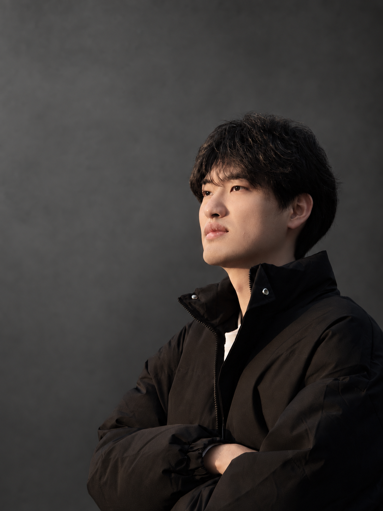
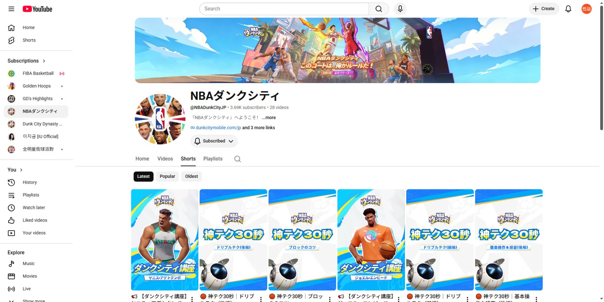
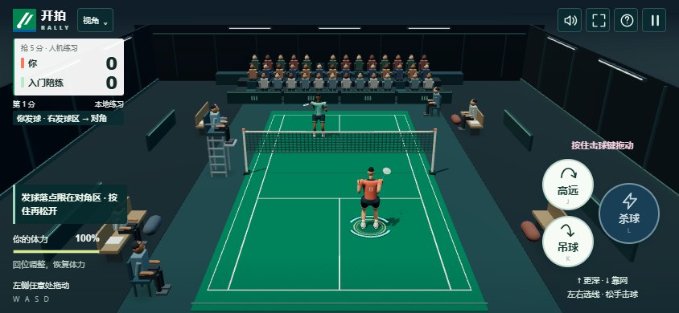

真相探求：身高187cm的李昊，真的因为太矮被马竞淘汰？
围绕“身高是否影响留洋经历”的讨论提出问题，检索相关资料、整理信息，并组织标题与正文。
571,226 阅读521 回复

我是周性运，也可以叫我 Lucky。本科读数学，现在读应用经济学硕士，预计 2027 年毕业。
最近在折腾各种 AI 工具，试着做点自己的小项目。
在网易、虎扑和盛力世家实习过，做过海外社媒内容、社区运营，也在赛事现场忙过。
平时爱看体育赛事。遇到新知识、新工具，总忍不住想多了解一点。
本科在浙江工业大学读数学与应用数学。
现在在上海师范大学读应用经济学硕士，预计 2027 年毕业。
在网易、虎扑和盛力世家实习时，我接触过海外社媒、社区内容和赛事现场；平时也会用 AI 工具折腾自己的小项目。
我做内容，也折腾海外社媒、社区活动和 AI 小项目。这四个方向都来自实际经历。
围绕 NBA 赛事、球员话题和社交媒体热点，为游戏相关 TikTok 账号策划并发布短视频。结合游戏角色、场景和玩法素材制作内容，让更多泛篮球用户接触游戏。
作品公开累计数据 · 2026-09-09 核实；包含发布后的持续传播。
账号 19.6K 粉丝为 2026-08-12 历史记录。
02 / 社媒视觉与互动 · INSTAGRAM
为官方 Instagram 组织海报、短视频和竞猜企划，把 NBA 热点、游戏角色与上线节点转化为用户能理解、能参与的内容。
用对阵关系和游戏球员形象组织预测话题，引导用户在总决赛节点参与讨论。
本人设计与制作。
本人提供数据 · 2026-08-12
项目协作 · 日韩市场 / YOUTUBE
围绕日韩服上线前的用户上手需要，规划教学内容的方向与目标，并将制作要求交接给外包团队。
规划协作数量，不等于公开发布数量。
作品集记录 · 2026-08-12

确定内容方向、阶段性选题和每条视频需要讲清的教学目标。
写清选题、教学目标与制作要求，作为外包制作和沟通的依据。
核对成片是否符合教学目标和制作要求，整理修改意见并跟进。
本人负责规划、中文制作说明和审核；日韩详细脚本、本地化、剪辑及制作由外包团队完成。
03 / 热点文章 · 虎扑
在体育社区里，内容需要明确的问题、清楚的信息和可继续讨论的切入点。两篇代表文章展示我的选题与文字表达。
阅读与回复数据 · 2026-08-12 作品集记录
一个持续更新的 NBA 账号，加上已经上线的 AI 小项目；之后的新尝试也会继续放在这里。
个人账号 · 抖音图文
我目前运营的抖音账号，围绕 NBA 发布图文内容。
个人项目 · AI 应用 / 浏览器游戏
打球打到一半冒出一个想法：做个不用安装、打开网页就能玩的羽毛球小游戏。后来，这个想法变成了「开拍 RALLY」。

空闲时也想找款羽毛球游戏过过瘾。试了几款，有的是 2D，有的玩起来不太对胃口。与其继续找，索性试着做一个自己想玩的版本。
我先找几个朋友聊过想法，再借助 AI 把初步设想落地。球场、人物和对打一点点搭起来，边试玩边调整，现在还在继续迭代。
累计300+玩家
上线近一周 · 本人提供，2026-09-14内容策划、海外社媒与社区运营。
关于作品、项目经历或岗位机会，欢迎联系。